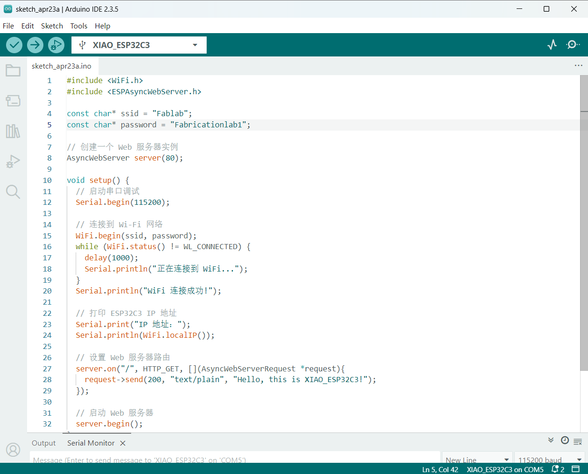
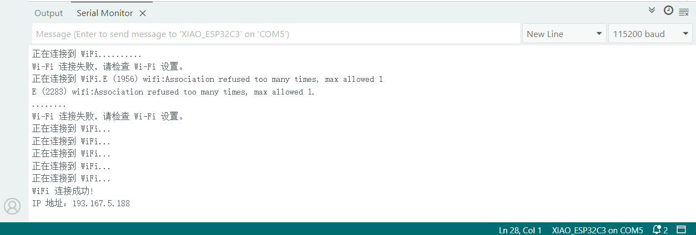
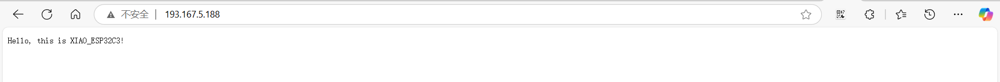
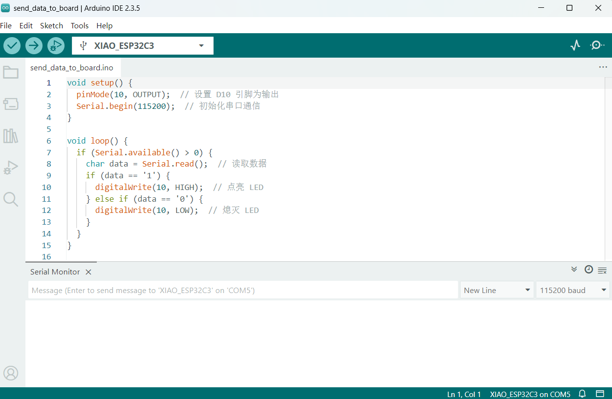
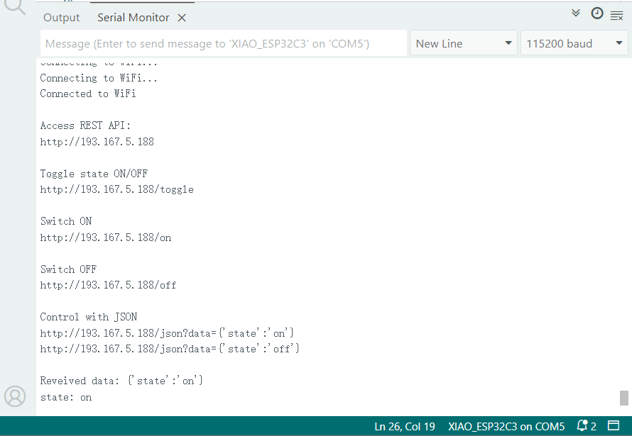
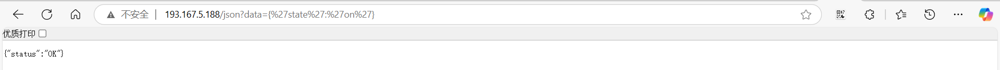
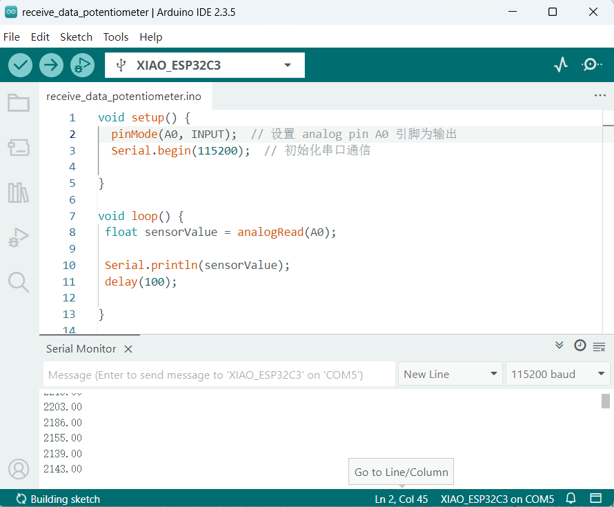

Way to Use Wireless Communication
I can find the guide here.
ESP32C3 board can let me use wireless communication to connect to the internet and communicate with other devices(like another ESP32C3 board) over WiFi. The build-in WiFi support allows the ESP32C3 board to receive and send data remotely, for instance, we can create a system where multiple ESP32C3 boards interact with each other wirelessly.
This wireless function let me donnot need to worry about the physical connection(it's hard to check which wire is broken or misconnection when the devices don't work rightly). It gives people more flexibility in different situation and more easily to maintain.
It can be used in Iot(internet of things) solutions such as smart homes and remote monitoring systems.
Connect with Computer and Web-browser
Hold on the BOOT BUTTON and connect XIAO ESP32C3 to the PC to enter bootloader mode. After it is connected, release the BOOT BUTTON
To initiate it, I include libraries like
In setup, I use WiFi.begin() with WiFi's name and password to connect with the WiFi internet. If the WiFi.status() = WL_CONNECTED, it means it connect with the WiFi successfully.
Then I use Serial.print() to print WiFi.localIP() so that I can get the IP address in Serial Monitor. And I keep the computer's WiFi as same as the EPS32C3 board's connected WiFi, than I search for the IP address which is http://WiFi.localIP() in the browser, then I can see the content I set in the arduino code.
I use server.on() to write the content. When I use browser to access the root path (/) of the ESP32C3, the server will respond with a HTTP GET request. When the server returns status code 200(it means the requst successed) the web page will show the content(the text message I write in the code)



Send Data to Board
I set character string input in Serial Monitor to control the LED light's on and off.
I use Serial.available() to check if there are available data in Serial Monitor, if there is, Serial.read will receive the input data.
If I input 1 and send it to Serial Monitor, the Digital pin D10 will output Voltage and then the LED light status will be HIGH. If I input 0 and send it to Serial Monitor, the Digital pin D10 will output Voltage and then the LED light status will be LOW.

In this case, we can change the web address as the input to change the web page content and LED light's on and off.


Receive Data
I use potentiometer as the sensor to input data to ESP32C3 board. By adjust the posotion of wiper, it can change its resistor value, then I will alter the current or voltage in the circuit.
I connect tow terminalS(right and left side, dosen't matter the turn) with GND and 3.3V, then connect the middle one with analog pin which I choose A0.
In code, I set A0 as INPUT, then I use analogRead() to read the measured voltage and use Serial.println() to print it.
When I rotate the knob of the potentiometer, I can see the data change in Serial Plotter and Serial Monitor.
